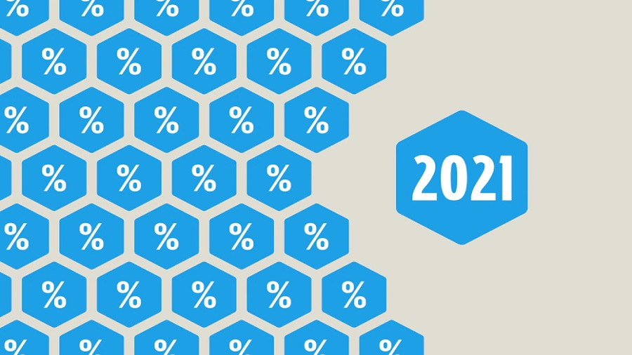

Actualités
Accueil
Actualités
Le projet
L'équipe
Contact
© STI'LECTION, 2021 - Tous droits réservés
Actualités
Élections départementales 2021 : les résultats du 1er tour, quelle perspective pour le 2e ?
EN DIRECT - RÉGIONALES: XAVIER BERTRAND SUSPEND SA CAMPAGNE LE TEMPS DES INTEMPÉRIES
